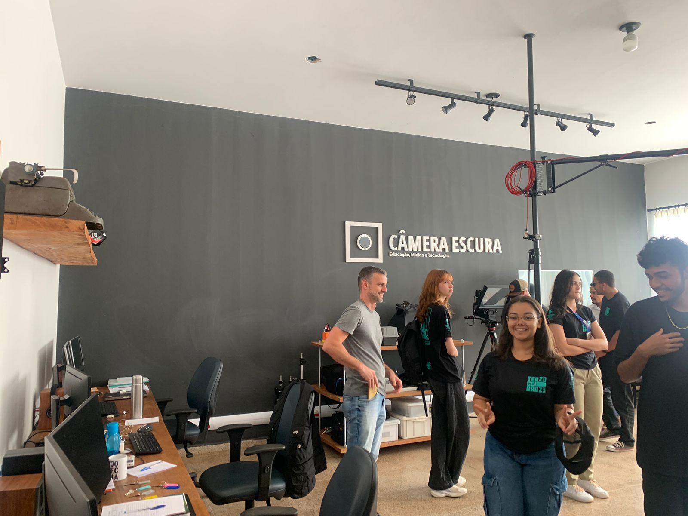
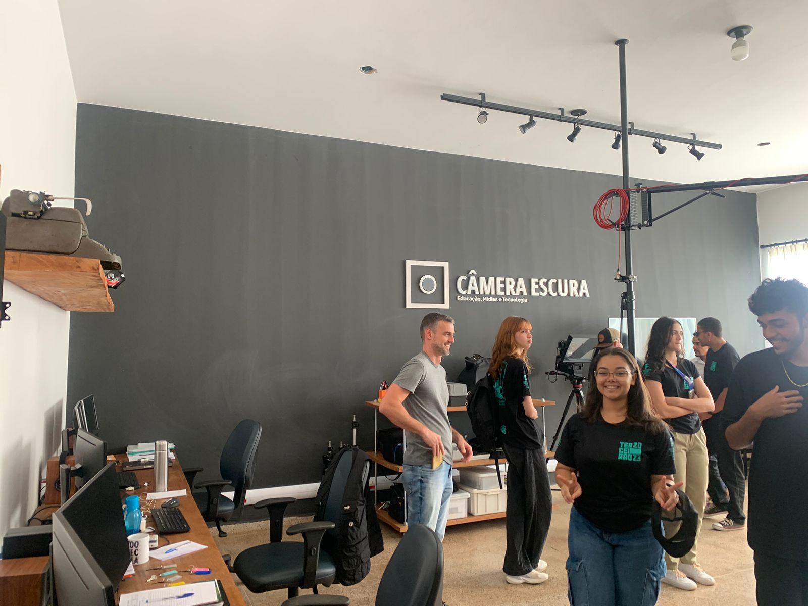
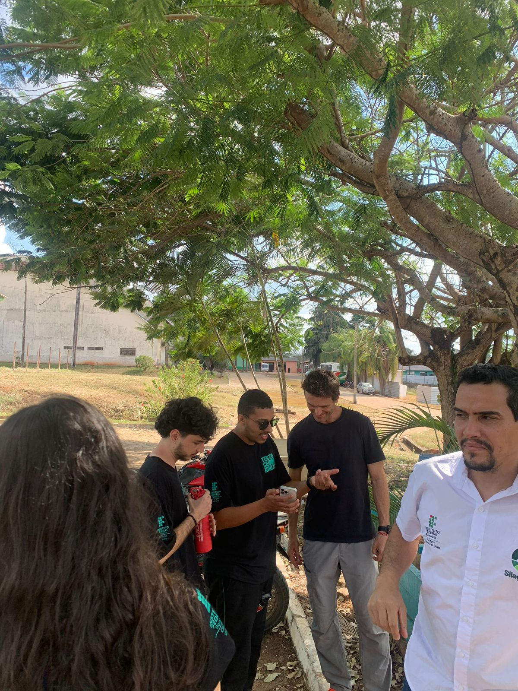
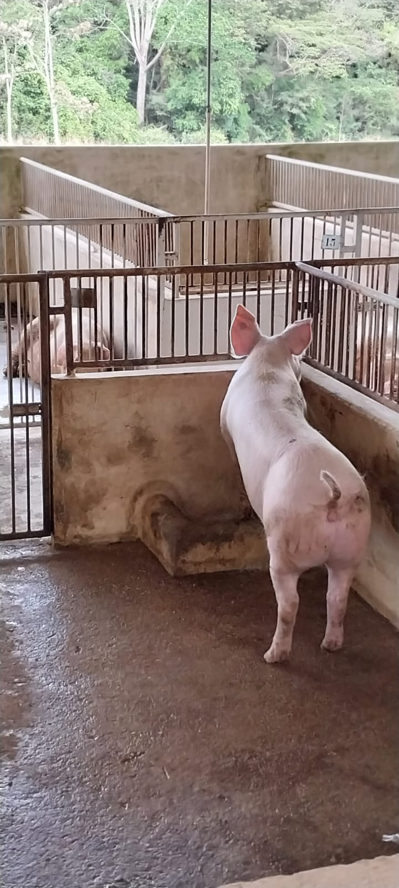
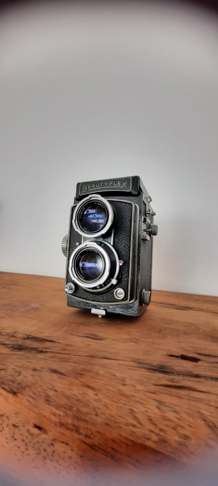
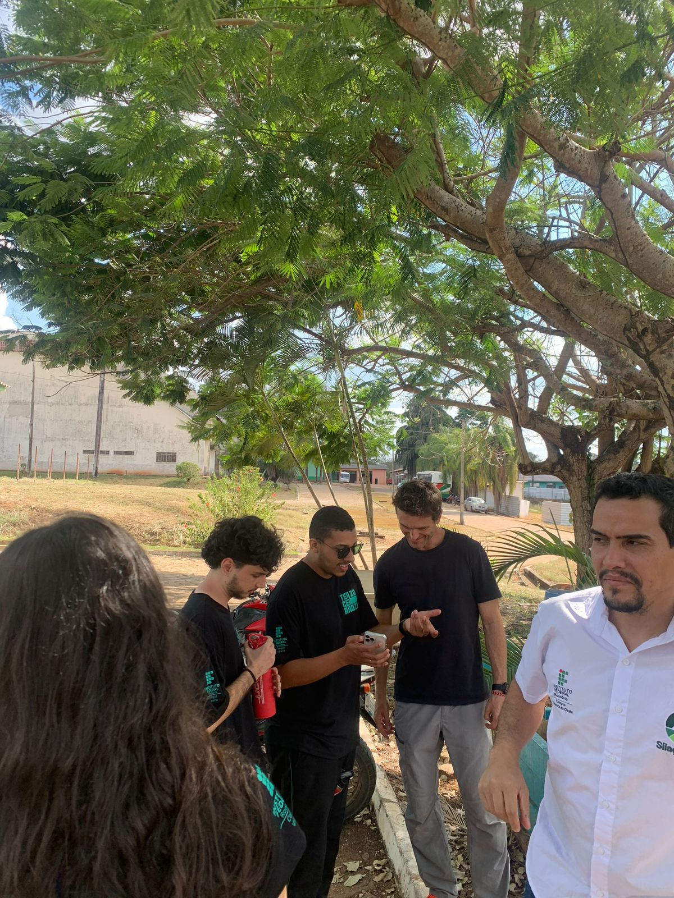
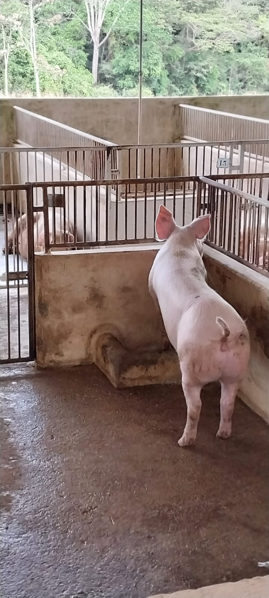
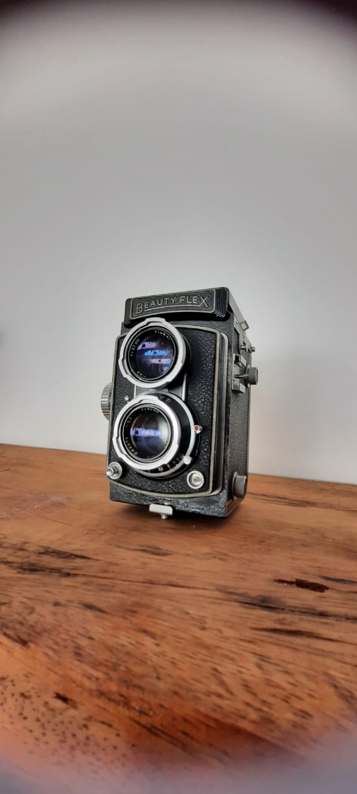
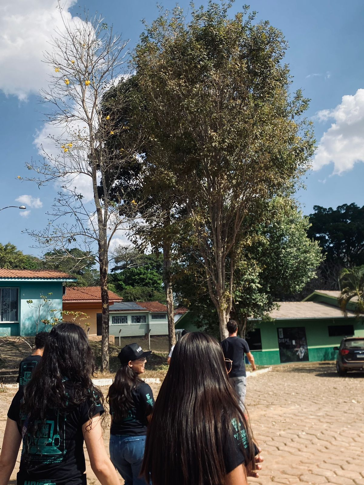
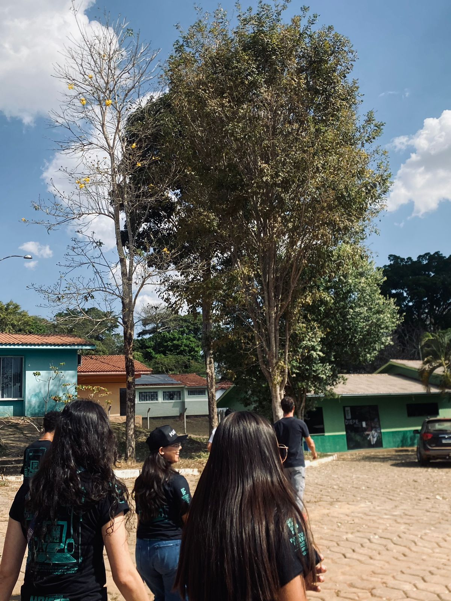

-
Estrutura Física
O campus conta com uma infraestrutura moderna e bem-mantida. Visitamos salas de aula, laboratórios, biblioteca, áreas de convivência e demais espaços destinados ao ensino e à pesquisa.
-
Cursos Oferecidos
Fomos apresentados aos cursos ofertados pelo IFRO em Colorado do Oeste, com ênfase em suas áreas de atuação e impacto na região.
-
Equipe Docente e Técnica
Tivemos a oportunidade de conversar com alguns docentes e técnicos administrativos, que nos apresentaram a equipe que compõe o campus e as atividades desenvolvidas.
-
Projetos de Pesquisa e Extensão
Fomos informados sobre os projetos de pesquisa e extensão em andamento no campus, destacando sua relevância para a comunidade local e regional.
-
Parcerias e Convênios
Discutimos possíveis parcerias entre nossa instituição e o IFRO, bem como a existência de convênios com outras entidades e empresas da região.
-
Recursos Tecnológicos
Conhecemos os recursos tecnológicos disponíveis, incluindo laboratórios de informática, equipamentos específicos para cursos técnicos, entre outros.
 

 





 
